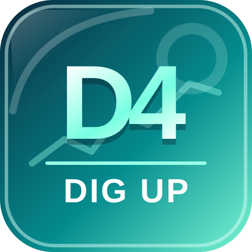

D4 DIG UP
Crystal Mint icon selected
iPhone install
Open this page in Safari, tap Share, then tap Add to Home Screen. The new icon will appear on your Home Screen.
Important: Back up finance records before changing or removing an existing installed app. A newly added Home Screen app may have separate local storage.
Open DIG UP in Safari